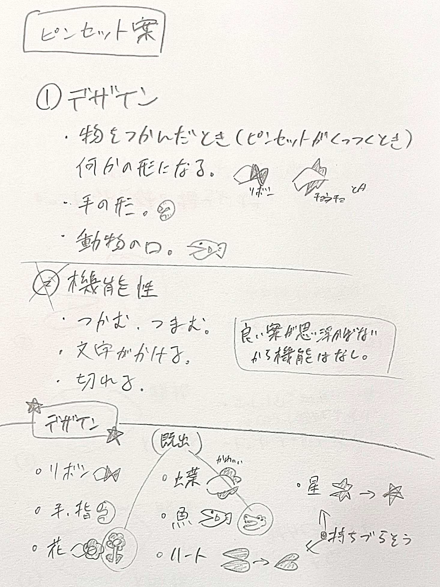
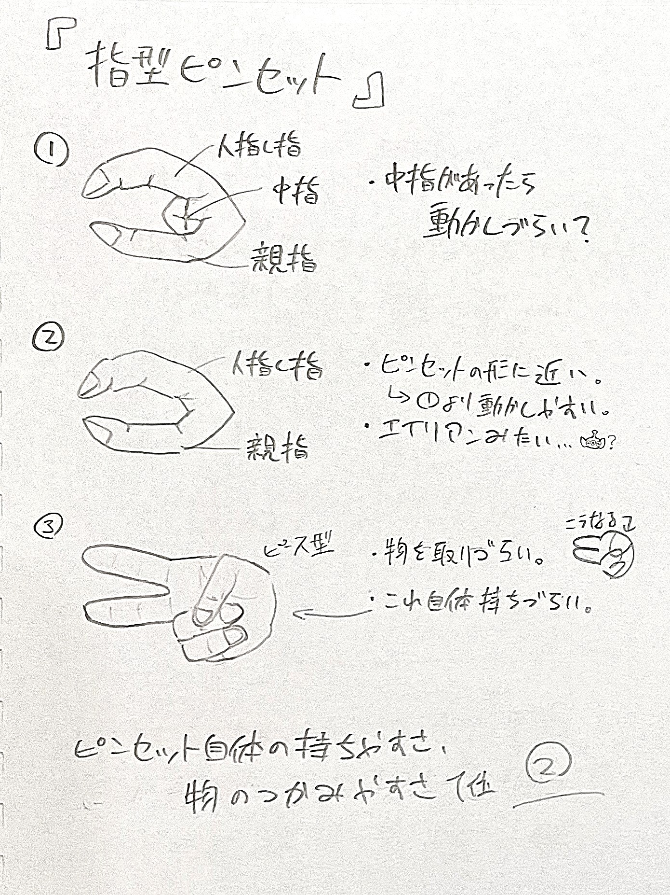
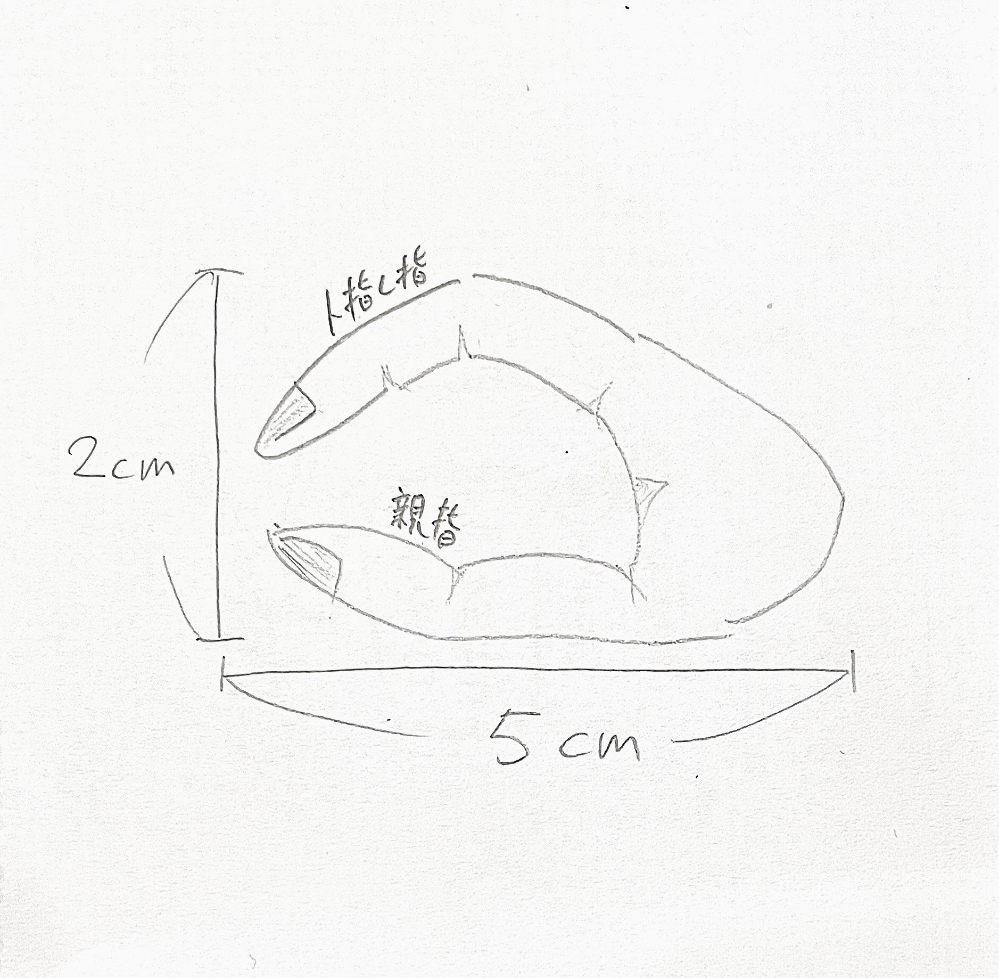
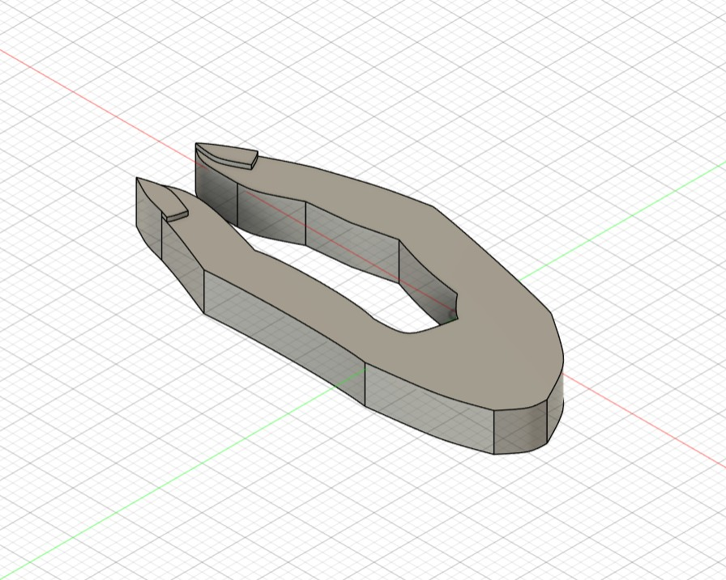
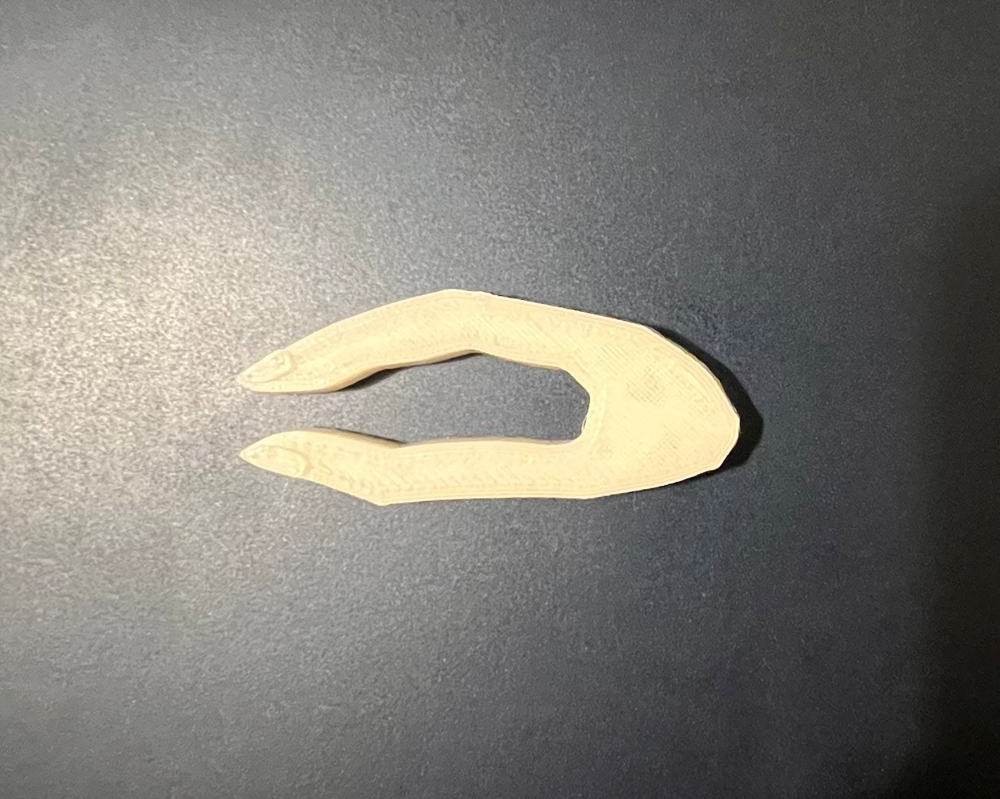
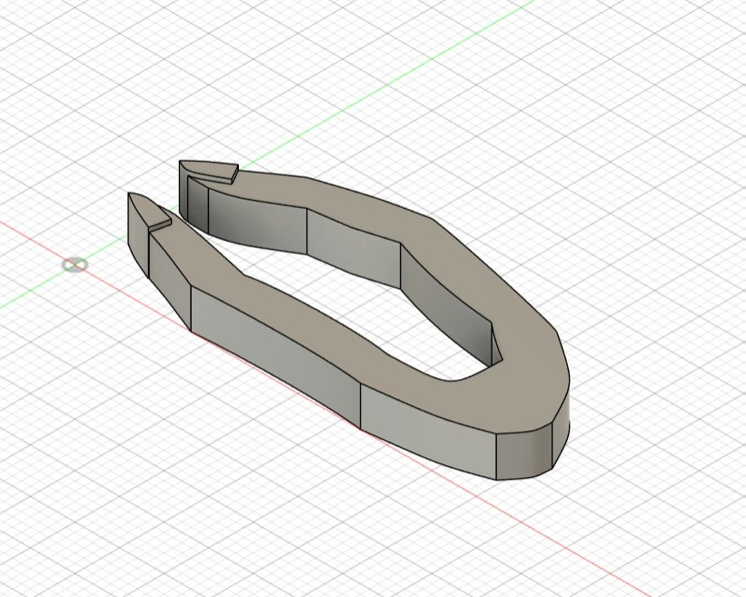
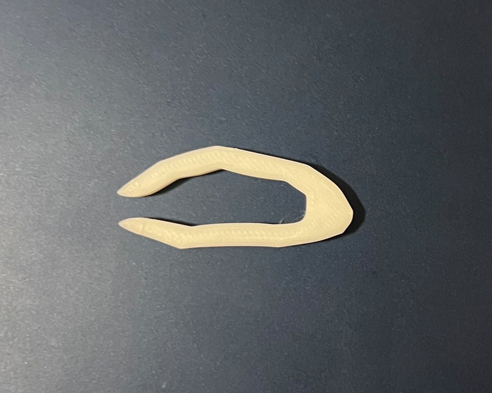
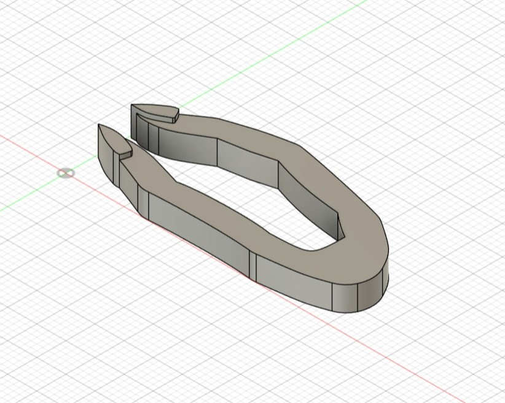
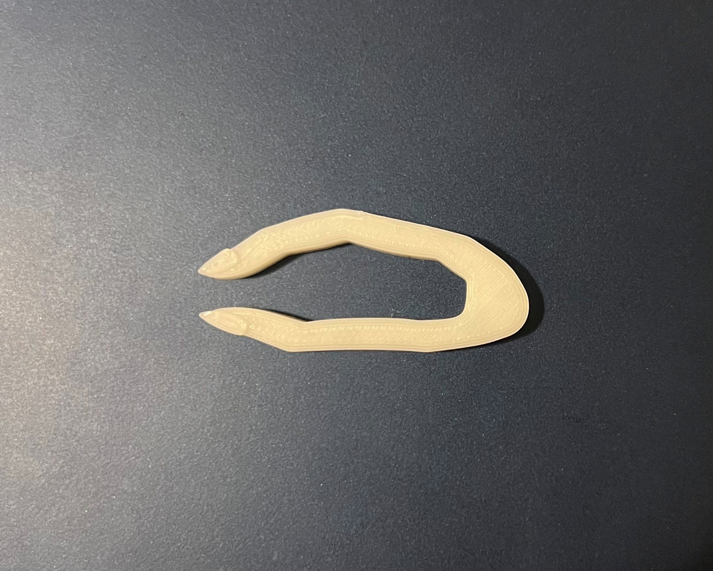

初めは機能性で一工夫あるピンセットを作ろうと考えたが、ピンとくるデザインが思い浮かばなかった。
そこで何かデザイン性のあるものを考えようと、指でピンセットの「ものをつかむ動き」をしたときにピンときて、指型ピンセットを作ろうと考えた。


指の形にできるだけ近づけるために、最大限太くした。

１個目より細く、指と認識できる細さにした。

爪の形をよりリアルにし、高さを増やした。１個目➔２個目➔完成形の順で使用。
今回の課題でFusionやCuraを利用してみて、図面上で作ったものを実際に形にしてみることで改善点を見つけることができた。
初めはわからないことだらけだったが、調べたり友人に教えてもらったりするうちにできることが増えていき、とても楽しく課題に取り組むことができた。
今後授業や授業外でこれらのアプリのさまざまなツールに触れ、使いこなせるようにしたい。